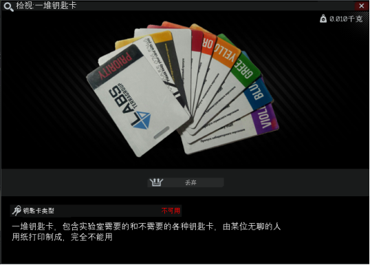
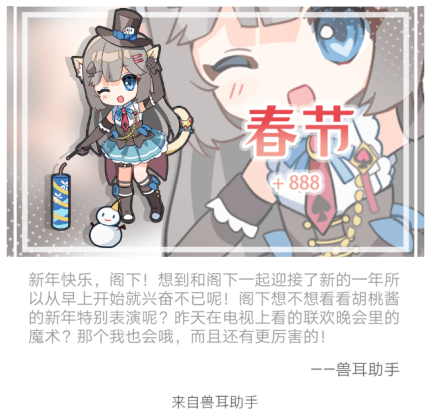
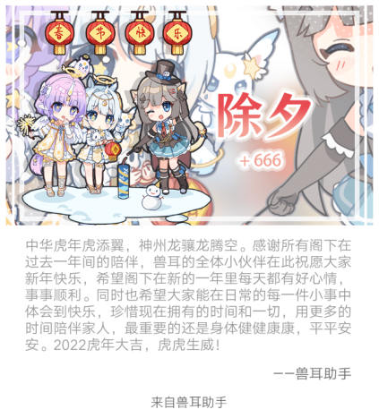
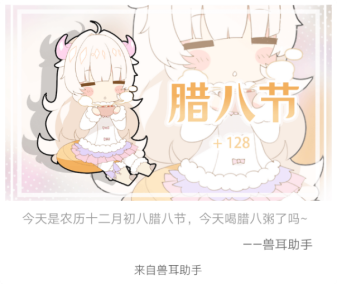

l 2022年
n 7月
u 27日
玩逃离塔克夫上头了忽然就想把游戏里的钥匙卡搞出来，今天一整天几乎都在搞这件事最后效果还不错 如图： |
u 4日
来白嫖电脑版我的世界基岩版——>教程 |
n 6月
u 5日
今天看hanser游戏实况“爱上你的冒牌货”作者怕不是从米哈游出来的，我找到了大佬的汉化版放在资源库里了，Webgame页面有日文原版 |
u 2日
这次看板娘彻底没了，果然从别人那借过来的东西都靠不住，这种东西还是要自己做啊 |
n 5月
u 29日
我看板娘没了！！！因为用的是别人的项目，所以我没有任何解决方案，只能等…… |
u 28日
距离凉宫御夏直播已经过去了一周，直播中透露的兽耳与泠鸢yousa的联动大概已经在泠鸢的粉丝圈子里传播开了，这次联动势必使兽耳助手的用户数增加，不得不说和虚拟主播联动是一个提升知名度的很好的方式，但对于我个人而言，我不会选择购买这次的联动角色，事实上前两次和超电磁炮、炎炎消防队的联动我也没有购买，联动角色根本不在我的收集目录中。值得一提的是，截至到我写这篇动态时，兽耳和泠鸢均没有对于联动消息进行正式公开，对此，我的看法是：静观其变，理智消费。 |
u 8日
被封在家里上网课，终于想起来更新网站主题了，正式更新为夏季风格（谁家的空调制冷能力这么强啊！话说这只是冬季背景P了一下而已吧！） |
n 4月
u 1日
在blog板块中更新了愚人节特典:《夏华集》由画师 何小涵 原创，真的不是“瞎画集”哦，真的不是！ |
n 3月
u 26日
加入了网页小游戏，目前收录了一些不需要看懂日语就能玩的简单小游戏；资源库加入了安卓软件板块，欢迎取用 |
n 2月
u 26日
更新了《64篇古诗文》，需者自取 详情 |
u 23日
还是第一次在学校过生日呢，虽然只有我自己知道，也没有什么生日的实感2333 |
u 6日
经过一系列思想斗争，我决定将我所使用的软件、工具等分享出来原因就是我想让我的网站真正有用，于是我秉持互联网共享精神，在这里加入了 资源库 入口，方便大家共享资源，不过现在资源库里的资源较少，还请有好用资源的客人邮件联系我，球球乐！ |
u 1日
新年好！！！  |
n 1月
u 31日
除夕啦！新年快乐鸭！  |
u 26日
成功在树莓派上部署nextcloud私有云，详情 |
u 15日
破防只在一瞬间，详情 |
u 12日
今天一天都在沉迷于设计网页 |
u 11日
搞看板娘搞了一天，作了各种修改妥协，结果翻到一篇教程只需要引用3行代码，直接解决我的问题 ，（虽然是别人的项目）人麻了 |
u 10日
农历也进入12月了，马上就要过年了呢  |